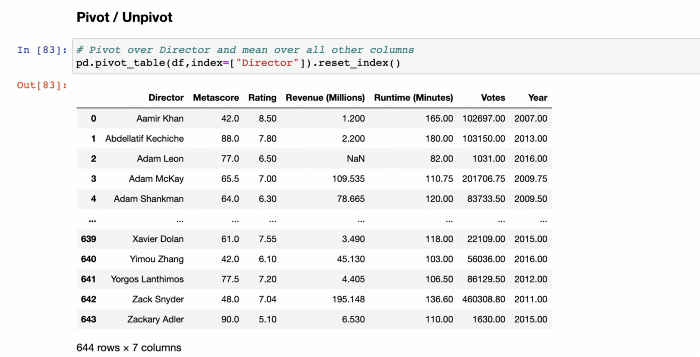
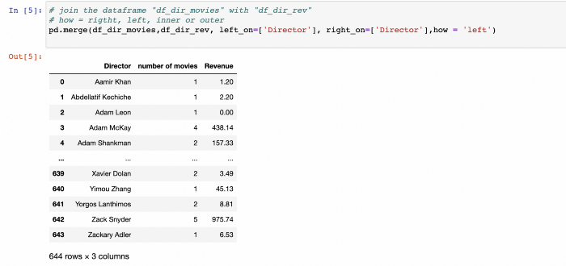

Jupyter Notebook is one of the most widely used tool in data science that use Python. This is due to the fact that it is an ideal environment for developing reproducible data analysis pipelines with Python. Data can be loaded, transformed, and modeled all inside a single Notebook, where it's quick and easy to test out code and explore ideas along the way. In addition, inline-formatted text lets you take notes to better document and share your work.
Pandas is a widely used open source Python library for data science, data analysis, and machine learning tasks. It is built on top of Numpy, the fundamental package for scientific computing in Python. Pandas, as one of the most popular data wrangling packages, integrates well with many other Python data science packages and is normally included in every Python distribution.
In our examples we will use the Anaconda distribution, which is the easiest to install and best integrated together with the KNIME Analytics Platform. Why Jupyter-Notebook, Python and Pandas?
As I explained in my previous articles, every data engineer should learn a visual programming language like KNIME. The reason for that is that the best representation of an ETL pipeline is a visual workflow:
So why learn Python and Pandas when 99% of your data engineering tasks can be solved with KNIME or any other visual programming ETL tool? One reason is that sometimes you need to perform complex calculations.
Python already provides very sophisticated libraries and packages for this. On the other hand it is possible to use code from Jupyter directly in KNIME.
That's why we want to learn the most essential commands in Python and Pandas to be able to perform the most important ETL processes in Jupyter-Notebook.
ETL (extract, transform, load) is a type of data integration that refers to the three phases (extract, transform, and load) that are used to combine data from various sources. Data is extracted from one or different source systems, transformed into an analyzeable format, and loaded into a data warehouse or other system throughout this process.
The ETL process consists of three main basic components: Input -> Transform -> Output
The task of the Input is to load different data source types into the processing tool. At the Output, the processed data is exported back to other databases, systems, or files. The Transformation process, on the other hand, can be divided into further sub-processes, which essentially consist of the following components:
In this section we call the two main Python packages pandas and numpy. To refer to the functions and objects of the packages, we add the corisponding aliases pd and np at the end.
import pandas as pd
import numpy as np
Then we read the csv file "input" in the dataframe "df" and output it with "df". Importing a csv-File input.csv in a dataframe df
df = pd.read_csv('path_to/input.csv' ,sep=",") print(df)
Finally we export the dataframe "df" as csv file with the name "output.csv".
df.to_csv ('path_to/output.csv' , index = False, header=True)
It is always good to get a quick insight about the data.
Various commands are available to show the data in the dataframe "df" from different angles.
df.head() # first five rows
df.tail() # last five rows
df.sample(5) # random sample of rows
df.shape # number of rows/columns
df.describe() # calculates measures of central tendency
df.info() # memory footprint and datatypes
The following commands cover the most common statistics functions:
df.describe() # Summary statistics for numerical columns
df.mean() # Returns the mean of all columns
df.corr() # Returns the correlation between columns in a DataFrame
df.count() # Returns the number of non-null values in each DataFrame column
df.max() # Returns the highest value in each column
df.min() # Returns the lowest value in each column
df.median() # Returns the median of each column
df.std() # Returns the standard deviation of each column
In the most cases you want to import data from a csv file or an Excel file. The name of the csv file is definied by my-data.csv. Rename the file to your needs. The same applies to the import of Excel files.
df = pd.read_csv('Data/my-data.csv' ,sep=",")
df = pd.read_excel('Data/my-data.xlsx')
df = pd.read_excel('Data/my-data.xlsx', sheetname='sheet1', skiprows=[1] # header data )
If you want to import a specific Excel sheet, rename "sheet1" with the desired sheet-name. You may also skip the first x rows with skiprows=[1]. Change "1" with the desired number of rows.
The data in a dataframe can be easily exported to an Excel file or a csv file.
df.to_excel('Data/my-data.xlsx')
df.to_csv ('Data/my-data.csv' , index = False, header=True)
Dataframes can be modified by manipulating columns in different ways. The following codes show how to filter the desired columns or how to rename them
df[['Title','Rating']]
df.filter(['Title','Rating'])
df.rename(columns={'Title': 'a', 'Rating': 'c'},inplace=True)
Rename the columns back
df.rename(columns={'a': 'Title', 'c': 'Rating'},inplace=True)
df.columns.values # show column values
Reorder Rating after Title
df[['Title', 'Rating','Genre', 'Description', 'Director', 'Actors', 'Year', 'Runtime (Minutes)', 'Votes', 'Revenue (Millions)', 'Metascore']]
Constant Value Column
df['new_column'] = 23 df.head()
Math Formula
df['Rating_Votes'] = df.Rating + df.Votes df[['Rating_Votes','Rating','Votes']].head()
Changing the type of a column from integer to string is a common task in data engineering. With "astype" you can change from number to string, from string to number or from number to double:
Number to String
df['Year_str'] =df['Year'].astype(str) df.info()
String to Number
df['Year_int'] =df['Year_str'].astype(int) df.info()
Double to Int
df['Rating_int'] = df['Rating'].round(0).astype(int) df[['Rating_int','Rating']].head()
To change string values in a column, several commands are available. Common tasks include changing string values to upper or lower case, counting word length, or finding the beginning of a word.
String Replacer
df['Title'].replace('Prometheus', 'Alien') df[df.Title == 'Prometheus']
Lower cases
df['Title2'] = df['Title'].str.lower() df[['Title2','Title']].head()
Upper cases
df['Title2'] = df['Title'].str.upper() df[['Title2','Title']].head()
Length of words
df['Title2'] = df['Title'].str.len() df[['Title2','Title']].head()
First word
df['Title2'] = df['Title'].str.split(' ').str[0] df[['Title2','Title']].head()
Find the word "Squad" in Title
df['Title2'] = df['Title'].str.find('Squad', 0) df[['Title2','Title']].head()
Without going into the many possibilities of date manipulation here, we will refer only to the conversion of string values into date values, as this is one of the most common tasks.
Date manipulation
pd.to_datetime('2010/11/12')
Sorting of a column is possible by one or more values at the same time.
Sort
df.sort_values(by='Title', ascending=True) df.sort_values(by=['Director','Year'], ascending=True)
As for the manipulation of columns, there are certain basic tasks to be done for the manipulation of rows. Filtering rows can be done in different way. The following image shows how you can filter rows by their content. Normally you want to filter by name or by range of values.
Select Title 'Prometheus'
df[df.Title == 'Prometheus']
Select Rating greater or equal 8.5
df[df.Rating >= 8.5]
Select Year equal 2016 and Rating greater or equal 8.5
df[(df.Year == 2016) & (df.Rating >= 8.5)]
Select Title with 'Prometheus','Sing', 'Guardians of the Galaxy'
titel = ['Prometheus','Sing', 'Guardians of the Galaxy'] df[df.Title.isin(titel)]
Select years in 2010,2015,002
years = [2010,2015,2002] df[df.Year.isin(years)]
Selects rows 1-to-3
df.iloc[0:3]
First 4 rows and first 2 columns
df.iloc[0:4, 0:2]
The Group By statement groups rows that have the same values into summary rows, like "find the number of titles for each year".
The Group By statement is often used with aggregate functions (COUNT(), MAX(), MIN(), SUM(), AVG()) to group the result-set by one or more columns. Here are a few examples:
Number of titles per year
df.groupby("Year")["Title"].count().to_frame()
Number of titles per year and per director
df.groupby(["Year","Director"])["Title"].count().to_frame().reset_index()
Number of titles per director
df.groupby(["Director"])["Title"].count().to_frame(name = 'count').reset_index()
Total revenue per year and per director
df.groupby(["Year","Director"])["Revenue (Millions)"].sum().to_frame().reset_index()
Rating-Mean per director
df.groupby("Director")["Rating"].mean().to_frame().reset_index()
Combination of different group by functions
df.groupby(["Year","Director"]).agg( { 'Title':"count", # number of titles per year and director 'Rating':"mean", # Rating-Mean per director 'Revenue (Millions)': "sum" # Total revenue per year and director } ).reset_index()
Pivot tables in Excel are probably familiar to most people. Pandas provides a similar function called pivot_table.

The following example shows how the pivot function over the "Director" column summarizes all other columns as mean values.
Pivot over Director and mean over all other columns
pd.pivot_table(df,index=["Director"]).reset_index()

If you want to summarize explicitly using sums, you must add the parameter "aggfunc=sum".
Pivot with sum
df_rev_sum = pd.pivot_table(df,index=["Director","Year"],values=["Revenue (Millions)"],aggfunc=np.sum).reset_index() df_rev_sum

Another possibility, similar to the transpose function in Excel, is to unpivot the data. Here we unpivot the years over the rating and for each year a column with the mean value of the rating is displayed.
Unpivot over years
df_rating = pd.pivot_table(df,values=['Rating'], columns=['Year']).reset_index() df_rating

df4.melt(id_vars=['index'],var_name='Year',value_name='Title')
The join function is one of the most important operation in data engineering. Understanding the following concept in the figure below is crucial to applying the join function.

Visual programming tools are better suited for this process. However, since we want to do this in Jupyter-Notebook, we will first create two data frames. We create first a dataframe with all movie directors and the number of their movies.
Create new dataframe "df_dir_movies"
df_dir_movies = df.groupby(["Director"])["Title"].count().to_frame(name = 'number of movies').reset_index() df_dir_movies

Then we create the second data frame with the directors and the total revenue generated for all their movies.
Create new dataframe "df_dir_rev"
df_dir_rev = df.groupby(["Director"])["Revenue (Millions)"].sum().to_frame(name = 'Revenue').reset_index() df_dir_rev

Now we join the two data frames together using the "director" column. There is an option to make the following joins using the "how" parameter:
Join the dataframe "df_dir_movies" with "df_dir_rev"
how = rigtht, left, inner or outer
pd.merge(df_dir_movies,df_dir_rev, left_on=['Director'], right_on=['Director'],how = 'left')

Combining or appending two different dataframes can be done with the following two functions. It is important that the columns in both data frames are the same.
df2 = df df.append(df2) # Append df2 to df (The columns must be the same in both dataframes) pd.concat([df, df2],axis=0) # concatenate two dataframes
import pymysql
conn = pymysql.connect(host='localhost',port=3306, db='database',user='root',password='pw')
df = pd.read_sql_query( "SELECT * FROM table LIMIT 3;", conn) df.tail(100)
import teradata
Make a connection
session = udaExec.connect(method="odbc", USEREGIONALSETTINGS="N", system= "dwh", username = "root", password = "pw");
query = "SELECT * FROM DATABASEX.TABLENAMEX"
Reading query to df
df = pd.read_sql(query,session)
Do something with df,e.g.
print(df.head()) #to see the first 5 rows
import pyhdb
connection = pyhdb.connect( host="localhost", port=30015, user="root, password="pw" ) print(connection.isconnected()) query = "SELECT * FROM HDB_REPORT."Table"" df = pd.read_sql(query,connection)
Do something with df,e.g.
print(df.head()) #to see the first 5 rows
With this Cheat Sheet you should be well prepared to perform most of the Data Enginnering tasks with Pandas in Jupyter-Notebook. This will also make it easier to integrate code you write in Python into KNIME and benefit from the advantages of both worlds.